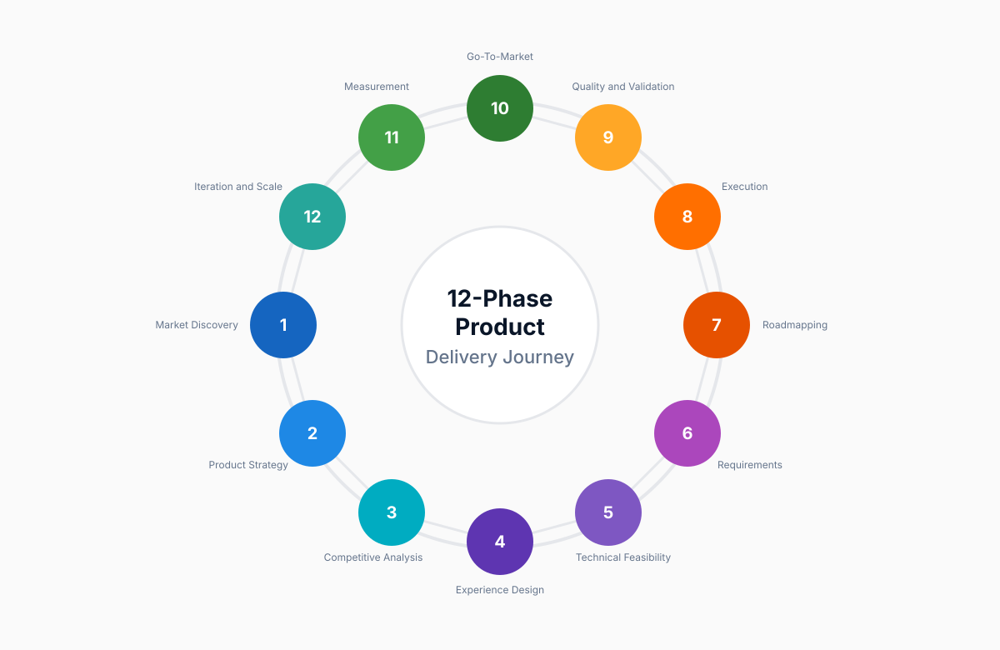

End-to-End Product Delivery Framework
The Complete Product Management Journey: From Discovery to Scale
A systematic, battle-tested framework for building products users love and businesses value. Navigate all 12 phases from market discovery to sustainable growth with structured workflows, proven frameworks, and ready-to-use templates.
The 12-Phase Journey
Phase 1
Market Discovery and Problem Definition
Validate problems worth solving
Before building anything, understand who experiences the problem and confirm they will pay to solve it.
Tasks
- Conduct user interviews and shadowing sessions.
- Define Jobs-to-Be-Done and validate problem severity.
- Size market opportunity and identify opportunity spaces.
Key Deliverables
- Research synthesis report.
- Problem validation matrix.
- Market opportunity sizing and opportunity tree.
Tools and Templates: Access Templates · Claude Skill: Use Market Discovery Assistant
Phase 2
Product Strategy and Vision
Define where you are going and why
Craft a compelling vision that aligns stakeholders and a strategy that charts your path to product-market fit.
Tasks
- Articulate vision, mission, and target segments.
- Set strategic goals with success metrics and OKRs.
- Align stakeholders on strategic direction.
Key Deliverables
- Product vision statement.
- Strategy one-pager and persona profiles.
- Value proposition canvas and metric tree.
Tools and Templates: Access Templates · Claude Skill: Use Strategy Workshop Assistant
Phase 3
Competitive and Landscape Analysis
Understand the battlefield
Map your competitive environment, identify threats and opportunities, and sharpen your differentiation strategy.
Tasks
- Map competitive landscape and feature parity.
- Analyze pricing and positioning strategies.
- Identify market gaps and defensible moats.
Key Deliverables
- Competitive matrix and comparison grid.
- Positioning map and SWOT analysis.
- Differentiation strategy document.
Tools and Templates: Access Templates · Claude Skill: Use Competitive Intelligence Assistant
Phase 4
Experience Design and Workflow Modeling
Design how users will succeed
Map end-to-end journeys and create intuitive workflows that reduce friction at every touchpoint.
Tasks
- Map current and future-state user journeys.
- Create user flows, IA, and wireframes.
- Build prototypes and run usability tests.
Key Deliverables
- Journey maps and task flows.
- Wireframes and prototype links.
- Usability test reports and design foundations.
Tools and Templates: Access Templates · Claude Skill: Use UX Design Assistant
Phase 5
Technical Feasibility and Architecture Planning
Ensure buildability at scale
Validate architecture choices, scalability assumptions, and technical dependencies before execution accelerates.
Tasks
- Assess technical feasibility and constraints.
- Plan architecture, data models, and infrastructure.
- Estimate effort and define risk controls.
Key Deliverables
- Feasibility assessment and architecture diagrams.
- Data schemas and technical risk register.
- Complexity estimates and ADRs.
Tools and Templates: Access Templates · Claude Skill: Use Technical Planning Assistant
Phase 6
Requirements and Product Specification
Document what to build
Translate strategy into build-ready requirements that engineering can implement and QA can validate.
Tasks
- Write user stories with acceptance criteria.
- Define functional and non-functional requirements.
- Align dependencies, metrics, and edge cases.
Key Deliverables
- PRD with acceptance criteria.
- Functional specs and API contracts.
- Risk and dependency map.
Tools and Templates: Access Templates · Claude Skill: Use PRD Writing Assistant
Phase 7
Roadmapping and Delivery Planning
Sequence work for maximum impact
Prioritize ruthlessly and communicate a roadmap that balances business outcomes with technical constraints.
Tasks
- Prioritize with RICE and value vs effort models.
- Sequence features and release milestones.
- Plan sprints, velocity, and critical path.
Key Deliverables
- Now-Next-Later roadmap.
- Quarterly release plan.
- Stakeholder communication deck.
Tools and Templates: Access Templates · Claude Skill: Use Roadmap Planning Assistant
Phase 8
Execution and Development
Ship high-quality work on time
Guide development with clarity, unblock teams quickly, and maintain momentum through strong delivery rituals.
Tasks
- Run agile ceremonies and manage backlog.
- Make trade-off decisions with stakeholders.
- Track velocity, burndown, and execution risk.
Key Deliverables
- Sprint goals and commitments.
- Decision logs and progress reports.
- Retrospective action items.
Tools and Templates: Access Templates · Claude Skill: Use Agile Execution Assistant
Phase 9
Quality, Risk and Validation
Ensure it works, is secure, and delights
Validate readiness through comprehensive testing, proactive risk mitigation, and clear launch criteria.
Tasks
- Plan functional, performance, and security testing.
- Run beta programs and acceptance validation.
- Establish go and no-go criteria.
Key Deliverables
- Test plans and bug triage logs.
- Security and performance reports.
- Launch readiness checklist.
Tools and Templates: Access Templates · Claude Skill: Use Quality Assurance Assistant
Phase 10
Go-To-Market and Launch
Bring it to customers successfully
Orchestrate launch sequencing, messaging, and enablement to drive adoption and long-term success.
Tasks
- Develop GTM strategy and launch messaging.
- Prepare sales and customer communication plans.
- Execute staged rollout and monitor launch metrics.
Key Deliverables
- GTM strategy and launch plan.
- Messaging framework and enablement assets.
- Launch metrics dashboard.
Tools and Templates: Access Templates · Claude Skill: Use Launch Planning Assistant
Phase 11
Post-Launch Measurement and Optimization
Learn and improve rapidly
Measure what matters, analyze behavior, and iterate quickly to improve product-market fit and retention.
Tasks
- Track adoption, engagement, and retention metrics.
- Run funnel analysis and user research loops.
- Prioritize experiments and optimization backlog.
Key Deliverables
- Analytics dashboard setup.
- Post-launch analysis and feedback synthesis.
- A/B test plans and results.
Tools and Templates: Access Templates · Claude Skill: Use Analytics and Optimization Assistant
Phase 12
Iteration, Scaling and Lifecycle Management
Evolve, grow, and steward long-term
Scale what works, sunset what does not, and continuously evolve your long-term product strategy.
Tasks
- Manage continuous iteration cycles and scaling plans.
- Expand to new segments and markets.
- Balance innovation with lifecycle optimization.
Key Deliverables
- Quarterly strategy reviews and lifecycle map.
- Technical roadmap (18-24 months).
- Feature sunset and expansion playbooks.
Tools and Templates: Access Templates · Claude Skill: Use Lifecycle Management Assistant
Key Principles Across All Phases
Start with the user
Every decision traces back to user needs.
Measure everything
Data informs decisions without replacing judgment.
Iterate relentlessly
Ship, learn, improve, and repeat.
Collaborate cross-functionally
PM is the conductor, not the solo performer.
Balance trade-offs
Time, quality, and scope require explicit choices.
Think big, start small
Set bold vision and execute pragmatically.
Communicate constantly
Clear updates prevent misalignment and drift.
Stay customer-obsessed
When uncertain, go back to users.
Get Started
Start from Phase 1
Ideal for new products or major initiatives.
Jump to Current Phase
Focus on where your product is right now.
Explore Full Journey
Review all 12 phases and identify capability gaps.
Access Tools Immediately
Use templates and AI assistants from day one.
FAQ
Do I need to follow all 12 phases in order?
The phases are logically sequenced, but you can adapt based on product context, team maturity, and business urgency.
How long does each phase take?
Duration varies by product complexity and organization size. Some phases run continuously, while others are periodic.
Can this framework work for feature development?
Yes. Individual features can compress multiple phases while preserving the same core activities and rigor.
What if I join an existing product in flight?
Start at the current phase, then back-reference earlier phases to identify gaps and tighten execution quality.
Are templates and AI skills free?
Pricing information will be shared with the framework resource release.
Ready to Transform Your Product Management?
Stay Updated
Subscribe to get updates when new templates, skills, and resources are added.
This framework provides product managers with a systematic, comprehensive approach to building successful products, grounded in real execution and continuously refined through practice.
© 2024 - Licensed under [License Type]